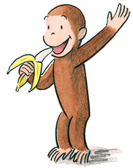
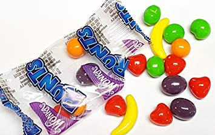

Banana flavored candies like Laffy Taffy are flavored like bananas that are now nearly extinct(not that I really mind, they are really not my favorite flavor anyway). The Gros Michel varietal was almost wiped out by a banana fungus, which was then replaced in grocery stores by the fungal-resistant Cavendish banana we all know and(some) love today.
In *Curious George* by H.A. Rey and Margret Rey, the main character Curious George eats a lot of bananas, though it is unclear what varietal he prefers.
To learn more about primates' favorite botanical fruit, click here
(don't know what to do with the rotting ones? Try this banana bread crepe cake
Though monocultures are prevalent due to the evils of capitalism, many farmers pursue biodiversity as a method of preserving and investing in our planet and the resident species' futures.
